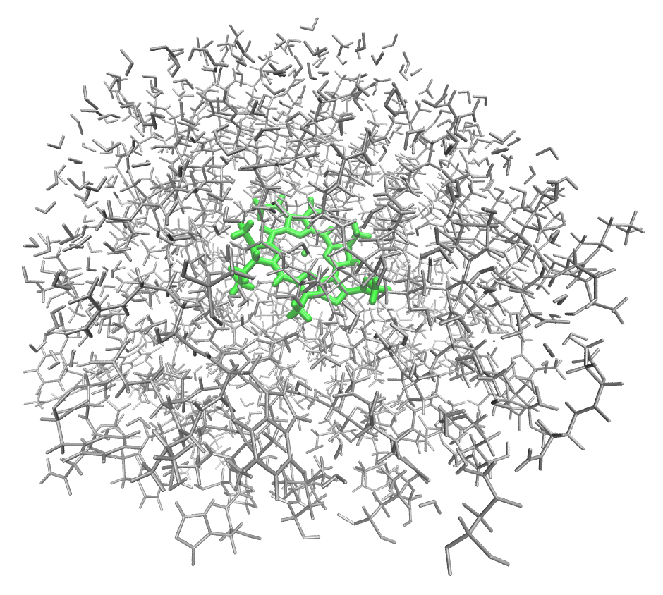
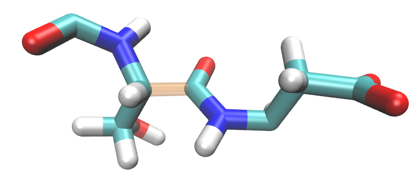

FMO: Applied flexible EFP
Overview
As is the case with many photoactive proteins,computational methods struggle to reproduce experimental spectra for the Fenna-Matthews-Olson complex (FMO). Work by Kim et al shows that flexible QM/EFP can be applied to FMO to correctly generate computational results in quantitative agreement to experimental spectra.
The key to applying EFP to your system is to carefully define the active site and EFP region. FMO is a trimeric protein with eight bacteriochloropyll a (BChl) pigments in each monomer. FMO completes energy transfer via excitonic couplings across these eight BChls. A summary of the complete workflow that was performed is the following: 1) molecular dynamics (MD) simiulations of the FMO protein in water and counter ions, 2) QM/MM (not EFP) geometry optimization of each active site (active sites consist of one BChl pigment and typically 3 H-bonding amino acids), and 3) flex-EFP excited state energy calculations of each pigment.
In the case of FMO, these steps must be repeated on several snapshots from MD to account for variation in the resting state of the structure, and the QM region must be defined carefully in both the QM/MM and flex-EFP stages. It might not be universally true that one must perform QM/MM geometry optimization. This page is a walkthrough for the flex-EFP procedure only. Molecular dynamics and QM/MM optimizations are assumed to be complete for your system prior to these steps.


You will need a structure file (.g96) and topology information (.top, for atom charges). In this specific case, a structure file is extracted from a GROMACS molecular dynamics trajectory and all water molecules more than 15 angstroms from the protein’s surface have been removed. For a chlorophyll-containing protein, you will likely want to optimize the geometry of each active chlorophyl molecule (with very close amino acids/water molecules) separately with more standard QM/MM approaches before proceeding with EFP calculations on the optimized geometry. For this example, the first BChl, residue number 359, has been optimized and will be the QM region for the EFP calcuation.

First, an EFP region must be defined. Every amino acid, (non QM) BChl, and water molecule containing an atom within 15 angstroms of the QM BChl headring.
The headring is defined by atomnames: MG CHA CHB HB CHC HC CHD HD NA C1A C2A H2A C3A H3A C4A CMA HMA1 HMA2 HMA3 NB C1B C2B C3B C4B CMB HMB1 HMB2 HMB3 CAB OBB CBB HBB1 HBB2 HBB3 NC C1C C2C H2C C3C H3C C4C CMC HMC1 HMC2 HMC3 CAC HAC1 HAC2 CBC HBC1 HBC2 HBC3 ND C1D C2D C3D C4D CMD HMD1 HMD2 HMD3 CAD OBD CBD HBD CGD O1D O2D CED HED1 HED2 HED3
The headring surrounded by EFP region looks like this:
{kind=link}
EFP is, of course, a fragmentation method. The protein residues within the 15 angstrom cutoff will be expressed individually. Because amino acids are a continuous chain, we will need to break each residue into its own fragment. Chemically, we would like to divide each residue by the C-C backbone bond, however, standard PDB listing convention divides residues by the C-N bond. To correct this, ‘C’ and ‘O’ atom names should be included in the following aminoc acid. This way the ‘C’ and ‘CA’ (carbonyl carbon and alpha carbon respectively) bond is the division between bonded fragments. See the example below:

For EFP, we would like these two fragments to look like this:
{kind=link}
The desired atoms are contained in the structure file, but they do not completely ‘agree’ with the amino acid numbering. Below is a snippet from the structure file with the desired EFP fragment 8 highlighted. Note that atom names ‘C’ and ‘O’ have to be included in the following fragment.
Next, the BChl molecules are closer than the 15 angstrom cutoff, so they also appear in the EFP region. It is more cost efficient to treat BChl fragments as separate head and tail groups as is shown below:
In the case of both amino acid and BChl fragments, we have at least one broken bond; we cannot simply compute a fragment that is missing an atomic bond. To solve this, we will introduce virtual hydrogen atoms to ‘cap’ the broken bonds. Non terminal amino acid fragments will have two virtual atoms. The first is between the alpha carbon of the previous residue and the carbonyl carbon of the current residue; the other is similarly between the alpha carbon of the current residue and the carbonyl carbon of the following residue. The BChl fragments are split between atoms ‘C2A’ and ‘CAA.’ One virtual atom will be added to both head and tail fragments between these atoms. Virtual atoms are added along the vector of the broken bonds with the distance changed to the C-H equilibrium bond distance, 1.09 angstroms.
Once the system is properly fragmented, we can finally run EFP calculations in the precense of the polarizable, solvatochromic environment.